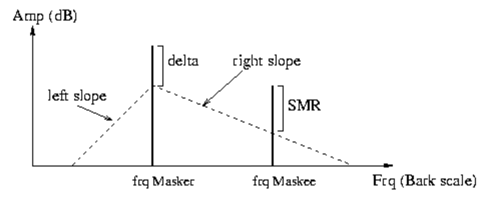

pyats.atsa package
Submodules
pyats.atsa.critical_bands module
Critical Bands and Signal-to-Mask Ratio Evaluation
This module is used to evaluate critical band masking for signal-to-mask ratio calculations
- pyats.atsa.critical_bands.ATS_CRITICAL_BAND_EDGES
1D array containing 26 frequencies that distinguish the default 25 critical bands
- Type
ndarray[float]
- pyats.atsa.critical_bands.compute_slope_r(masker_amp_db, slope_l=-27.0)[source]
Function to compute right slope of triangular mask
Computes the right slope of mask, dependent on the level of the masker
- Parameters
masker_amp_db (float) – Amplitude (in dB) of the masker peak
slope_l (float, optional) – slope (in dB / bark) of the lower frequency side of the masking triangle
- pyats.atsa.critical_bands.evaluate_smr(peaks, slope_l=-27.0, delta_db=-50)[source]
Function to evaluate signal-to-mask ratio for the given peaks
This function evaluates masking values (SMR) for
AtsPeak`s in list `peaksIteratively the parameters will be use to generate a triangular mask with a primary vertex at the frequency of, and at delta_dB below the amplitude of the masker.All other peaks are evaluated based on the triangular edges descending from the primary vertex according to slope_l for lower frequencies, and a calculated slope for higher frequencies. Maskee amplitudes proportions above this edge are then assigned to the maskee peak’s smr property. By the end of the iteration, the largest smr seen as maskee is kept in the peak’s smr property.
- Parameters
peaks (Iterable[
AtsPeak]) – An iterable collection of AtsPeaks that will have their smr attributes updatedslope_l (float, optional) – A float (in dB/bark) to dictate the slope of the left side of the mask (default: -27.0)
delta_db (float, optional) – A float (in dB) that sets the amplitude threshold for the masking curves Must be (<= 0dB) (default: -50)
- Raises
ValueError – If delta_db is not less than or equal to 0.
{kind=link}
- pyats.atsa.critical_bands.find_band(freq)[source]
Function to retrieve lower band edge in
ATS_CRITICAL_BAND_EDGES- Parameters
freq (float) – A frequency (in Hz) to find the related band in
ATS_CRITICAL_BAND_EDGESfor- Returns
index into
ATS_CRITICAL_BAND_EDGESthat marks the lower band edge for the given freq- Return type
int
- Raises
LookupError – if the frequency given is outside the range of the lowest or highest edge in
ATS_CRITICAL_BAND_EDGES
- pyats.atsa.critical_bands.frq_to_bark(freq)[source]
Function to convert frequency from Hz to bark scale
This function will convert frequency from Hz to bark scale, a psychoacoustical scale used for subjective measurements of loudness.
- Parameters
freq (float) – A frequency (in Hz) to convert to bark scale
- Returns
the frequency in bark scale
- Return type
float
pyats.atsa.peak_detect module
Single-Frame Peak Detection from FFT Data
Functions to process FFT data and extract peaks
- pyats.atsa.peak_detect.parabolic_interp(alpha, beta, gamma)[source]
Function to TODO
TODO does parabolic interpolation of 3 points returns the x offset and height of the interpolated peak
- Parameters
alpha (float) – TODO
beta (float) – TODO
gamma (float) – TODO
- Returns
offset (float) – TODO
height (float) – TODO
- pyats.atsa.peak_detect.peak_detection(fftfreqs, fftmags, fftphases, lowest_bin=None, highest_bin=None, lowest_magnitude=None)[source]
Function to detect peaks from FFT data
TODO
- Parameters
fftfreqs (ndarray[float64]) – TODO
fftmags (ndarray[float64]) – TODO
fftphases (ndarray[float64]) – TODO
lowest_bin (int, optional) – TODO (default: None)
highest_bin (int, optional) – TODO (default: None)
lowest_magnitude (float, optional) – TODO (default: None)
- Returns
TODO
- Return type
list[
AtsPeak]
pyats.atsa.peak_tracking module
TODO Summary
TODO About
- pyats.atsa.peak_tracking.are_valid_candidates(candidate1, candidate2, deviation)[source]
Function to TODO
TODO
- pyats.atsa.peak_tracking.peak_dist(pk1, pk2, alpha)[source]
Function to TODO
TODO
- Parameters
pk1 (
AtsPeak) – TODOpk1 – TODO
alpha (float) – TODO
- Returns
TODO
- Return type
float
- pyats.atsa.peak_tracking.peak_tracking(tracks, peaks, frame_n, analysis_frames, sample_rate, hop_size, frequency_deviation=0.45, SMR_continuity=0.0, min_gap_length=1)[source]
Function to TODO
TODO adaptation of the Gale-Shapley algorithm for stable matching of peaks_a and peaks_b for matched peaks, track numbers are updated tracker is gap-size aware, and will monitor ‘slept’ tracks within gap distance as candidates linear interpolation will be used to fill the gaps return value is None, function will update tracks, peaks, and analysis_frames directly
- Parameters
tracks (Iterable[
AtsPeak]) – TODOpeaks (Iterable[
AtsPeak]) – TODOframe_n (int) – TODO
analysis_frames – TODO
sample_rate (int) – TODO
hop_size (int) – TODO
frequency_deviation (float, optional) – TODO (default: 0.45)
SMR_continuity (float, optional) – TODO (default: 0.0)
min_gap_length (int) – TODO (default: 1)
- pyats.atsa.peak_tracking.phase_interp(freq_0, freq_t, pha_0, t)[source]
Function to TODO
TODO returns the phase (-pi,pi] at time t given that the freq linearly interpolates from freq_0, with phase pha_0 at time 0 to freq_t at time t
- Parameters
freq_0 (float) – TODO
freq_t (float) – TODO
pha_0 (float) – TODO
t (float) – TODO
- Returns
TODO
- Return type
float
- pyats.atsa.peak_tracking.phase_interp_cubic(freq_0, freq_t, pha_0, pha_t, i_samps_from_0, samps_from_0_to_t, sample_rate)[source]
Function to TODO
TODO for cubic polynomial interpolation of phase credit: McAulay & Quatieri (1986)
- Parameters
freq_0 (float) – TODO
freq_t (float) – TODO
pha_0 (float) – TODO
pha_t (float) – TODO
i_samps_from_0 (int) – TODO
samps_from_0_to_t (int) – TODO
sample_rate (int) – TODO
- Returns
TODO
- Return type
float
- pyats.atsa.peak_tracking.update_track_averages(tracks, track_length, frame_n, analysis_frames, beta=0.0)[source]
Function to TODO
TODO updates the list of current <tracks> we use <track_length> frames of memory to update average amp, frq, and smr of the tracks the function returns None, as the tracks are updated directly
- Parameters
tracks (Iterable[
AtsPeak]) – TODOtrack_length (int) – TODO
frame_n (int) – TODO
analysis_frames – TODO
beta (float, optional) – TODO (default: 0.0)
pyats.atsa.residual module
TODO Summary
TODO About
- pyats.atsa.residual.band_to_energy(ats_snd, band_edges, use_smr=False)[source]
Function to TODO
TODO
- Parameters
ats_snd (
AtsSound) – TODOband_edges (TODO) – TODO
use_smr (bool, optional) – TODO (default: False)
- pyats.atsa.residual.compute_residual(residual_file, ats_snd, in_sound, start_sample, end_sample, export_residual=True)[source]
Function to computes the difference between the ats_snd synthesis and the original sound
TODO
- Parameters
residual_file (str) – TODO
ats_snd (
AtsSound) – TODOin_sound (ndarray[float]) – TODO
start_sample (int) – TODO
end_sample (int) – TODO
export_residual (bool, optional) – TODO (default: True)
- Returns
residual – TODO
- Return type
ndarray[float]
- pyats.atsa.residual.remove_bands(ats_snd, threshold)[source]
Function TODO
TODO remove bands from ats_snd that are below threshold (in dB)
- Parameters
ats_snd (
AtsSound) – TODOthreshold (float) – TODO
- pyats.atsa.residual.residual_N(M, min_fft_size, factor=2)[source]
Function to TODO
TODO
- Parameters
M (int) – TODO
min_fft_size (int) – TODO
factor (int, optional) – TODOe)
- Returns
TODO
- Return type
int
- pyats.atsa.residual.residual_analysis(residual, ats_snd, min_fft_size=4096, equalize=False, pad_factor=2, band_edges=None, par_energy=False, verbose=True)[source]
Function to TODO
TODO
- Parameters
residual (ndarray[float]) – TODO
ats_snd (
AtsSound) – TODOmin_fft_size (int, optional) – TODO (default: 4096)
equalize (bool, optional) – TODO (default: False)
pad_factor (int, optional) – TODO (default: 2)
band_edges (TODO) – TODO (default: None)
par_energy (bool) – TODO (default: False)
verbose (bool, optional) – TODO (default: True)
pyats.atsa.tracker module
TODO Summary
TODO About
- pyats.atsa.tracker.tracker(in_file, out_snd, start=0.0, duration=None, lowest_frequency=20, highest_frequency=20000.0, frequency_deviation=0.1, window_cycles=4, window_type='blackman-harris-4-1', hop_size=0.25, fft_size=None, amp_threshold=0.001, track_length=3, min_gap_length=3, min_segment_length=3, last_peak_contribution=0.0, SMR_continuity=0.0, residual_file=None, optimize=True, optimize_amp_threshold=None, force_M=None, force_window=None, window_alpha=0.5, window_beta=1.0, verbose=False)[source]
Function to TODO
TODO
- Parameters
in_file (str) – TODO
out_snd (str) – TODO
start (float) – TODO analysis start point (in s) (default: 0.0)
duration (float) – TODO max duration to analyze (in seconds) or ‘None’ if analyze to end (default: None)
lowest_frequency – TODO must be > 0 (default: 20)
highest_frequency (float) – TODO (default: 20000.0)
frequency_deviation (float) – TODO (default: 0.1)
window_cycles (int) – TODO (default: 4)
window_type (str) – TODO (default: ‘blackman-harris-4-1’)
hop_size (float) – TODO fraction of window size (default: 0.25)
fft_size (int) – TODO None, or force an fft size (default: None)
amp_threshold (float) – TODO (default: 0.001)
track_length (int) – TODO (default: 3)
min_gap_length (int) – TODO (default: 3)
min_segment_length (int) – TODO (default: 3)
last_peak_contribution (float) – TODO (default: 0.0)
SMR_continuity (float) – TODO (default: 0.0)
residual_file (str) – TODO (default: None)
optimize (bool) – TODO (default: True)
optimize_amp_threshold (float) – TODO in amplitude (default: None)
force_M (int) – TODO None, or a forced window length in samples (default: None)
force_window (ndarray[float]) – TODO None, or a numpy.ndarray of floats (default: None)
window_alpha (float) – TODO (default: 0.5)
window_beta (float) – TODO (default: 1.0)
verbose (bool) – TODO (default: False)
- Returns
TODO
- Return type
- Raises
TODO –
pyats.atsa.utils module
TODO Summary
TODO About
- pyats.atsa.utils.MAX_DB_SPL
TODO
- Type
float
- pyats.atsa.utils.ATS_MIN_SEGMENT_LENGTH
TODO
- Type
int
- pyats.atsa.utils.ATS_AMP_THRESHOLD
TODO
- Type
float
- pyats.atsa.utils.ATS_NOISE_THRESHOLD
TODO
- Type
float
- pyats.atsa.utils.amp_to_db(amp)[source]
Function to TODO
TODO convert amplitude to decibels
- Parameters
amp (float) – TODO
- Returns
TODO
- Return type
float
- pyats.atsa.utils.amp_to_db_spl(amp)[source]
Function to TODO
TODO
- Parameters
amp (float) – TODO
- Returns
TODO
- Return type
float
- pyats.atsa.utils.compute_frames(total_samps, hop)[source]
Function to TODO
TODO computes the number of frames in the specified analysis we want to have an extra frame at the end to prevent chopping the ending
- Parameters
total_samps (int) – TODO
hop (int) – TODO
- Returns
TODO
- Return type
int
- pyats.atsa.utils.db_to_amp(db)[source]
Function to TODO
TODO convert decibels to amplitude
- Parameters
db (float) – TODO
- Returns
TODO
- Return type
float
- pyats.atsa.utils.next_power_of_2(num)[source]
Function to TODO
TODO return the closest power of 2 integer more than or equal to <num>
- Parameters
num (int) – TODO
- Returns
TODO
- Return type
int
- pyats.atsa.utils.optimize_tracks(tracks, analysis_frames, min_segment_length, amp_threshold, highest_frequency, lowest_frequency)[source]
Function to TODO
TODO
- Parameters
tracks (Iterable[
AtsSound]) – TODOanalysis_frames (TODO) – TODO
min_segment_length (int) – TODO
amp_threshold (float) – TODO
highest_frequency (float) – TODO
lowest_frequency (float) – TODO
- Return type
TODO
pyats.atsa.windows module
TODO Summary
TODO About All data coming form Harris’ famous paper: “On the Use Of windows For Harmonic Analysis With The Discrete Fourier Transform” Proceedings of the IEEE, Vol. 66, No. 1 (pg. 51 to 84) January 1978 and Albert H. Nuttall, “Some Windows with Very Good Sidelobe Behaviour”, IEEE Transactions of Acoustics, Speech, and Signal Processing, Vol. ASSP-29, No. 1, February 1981, pp 84-91
- pyats.atsa.windows.VALID_FFT_WINDOW_DEFINITIONS
TODO
- Type
list[str]
- pyats.atsa.windows.ATS_BLACKMAN_WINDOW_COEFF
TODO 2D
- Type
ndarray[float]
- pyats.atsa.windows.ATS_BLACKMAN_WINDOW_COEFF_LABELS
TODO
- Type
dict[str : list[float]]
- pyats.atsa.windows.bes_i0(x)[source]
Function to TODO
TODO Modified Bessel Function of the First Kind from “Numerical Recipes in C”
- Parameters
x (float) – TODO
- Returns
TODO
- Return type
float
- pyats.atsa.windows.make_blackman_window(window_type, size)[source]
Function to TODO
TODO
- Parameters
window_type (str) – TODO
size (int) – TODO
- Returns
TODO
- Return type
ndarray[float]
- pyats.atsa.windows.make_fft_window(window_type, size, beta=1.0, alpha=0.5)[source]
Function to TODO
TODO
- Parameters
window_type (str) – TODO
size (int) – TODO
beta (float, optional) – TODO (float: 1.0)
alpha (float, optional) – TODO (float: 0.5)
- Returns
TODO
- Return type
ndarray[float]
- Raises
TODO –